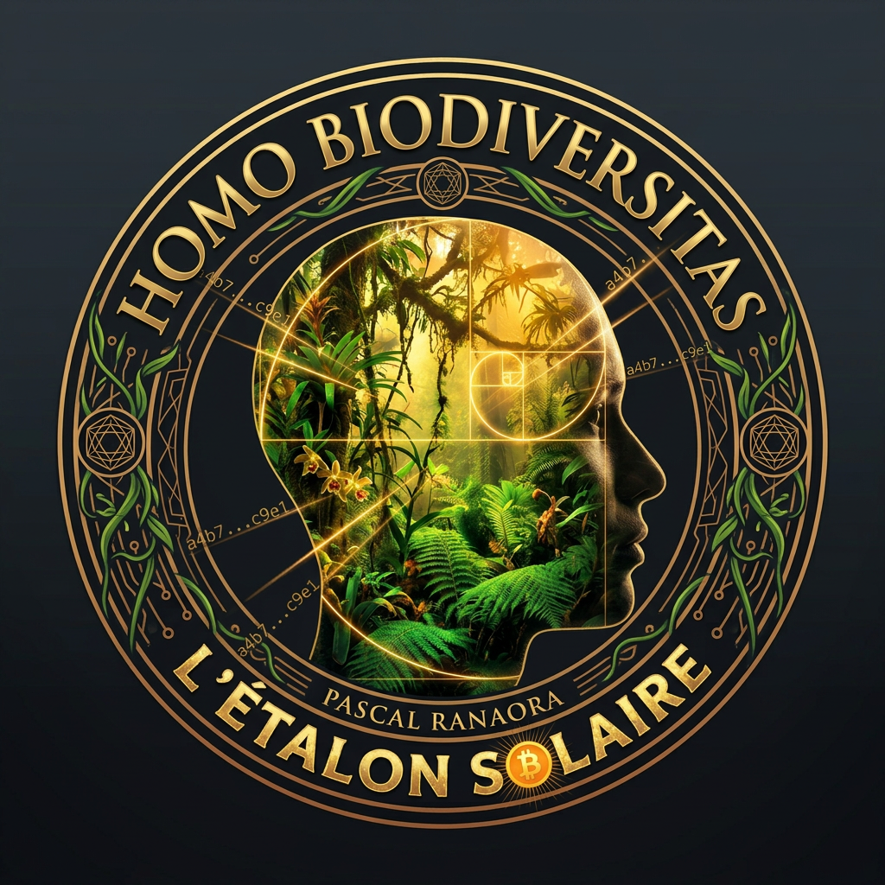

La Toile de la Vie Web Of Life
Le Code Source Ouvert de la Réalité The Open Source Code of Reality
PAR PASCAL RANOROARIJAONA // INGÉNIERIE THERMODYNAMIQUE & INTELLIGENCE SYMBIOTIQUE BY PASCAL RANOROARIJAONA // THERMODYNAMIC ENGINEERING & SYMBIOTIC INTELLIGENCE
💡 En Résumé : Qu'est-ce que la Toile de la Vie ? Executive Summary: What is the Web of Life?
Un organisme vivant n'est pas seulement un être biologique : c'est une structure dissipative ouverte qui consomme de l'énergie pour maintenir son ordre interne et rejeter son désordre (entropie). Dans ce projet, chaque être vivant ou individu est modélisé comme un POD (une structure de données thermodynamiques) couplé à sa propre blockchain à Preuve de Travail (PoW) autonome.
A living organism is not just a biological entity: it is an open dissipative structure that consumes energy to maintain its internal order while rejecting disorder (entropy). In this project, every living creature or individual is modeled as a POD (a thermodynamic data structure) coupled with its own autonomous Proof-of-Work (PoW) blockchain.
🌐 La Membrane de Souveraineté (Solid PODs & Couverture de Markov) : Tout comme le protocole Solid de Tim Berners-Lee redéfinit le stockage des données personnelles via des PODs souverains où l'individu choisit précisément qui peut lire quoi, notre modélisation confère à chaque monade une membrane statistique inviolable (au sens de la Couverture de Markov de Karl Friston étudiée dans l'Acte III). Vos données, vos métadonnées et votre empreinte d'exergie demeurent sous votre contrôle cryptographique strict.
🌐 The Sovereignty Membrane (Solid PODs & Markov Blanket): Much like Tim Berners-Lee's Solid protocol redefines personal data storage through sovereign PODs where users precisely choose who reads what, our modeling endows each monad with an inviolable statistical membrane (mirroring Karl Friston's Markov Blanket formalized in Act III). Your data, metadata, and exergy footprint remain under your strict cryptographic control.
Respirer, chasser ou se nourrir équivaut à "miner" sa propre existence à travers des transactions biochimiques. 1. 🔒 La preuve de travail cryptographique sert à sécuriser la Noosphère (l'esprit et l'information) : elle ancre notre intelligence dans la réalité physique et résout le problème de la double-dépense numérique. 2. 🌱 La preuve de travail écologique sert à sécuriser la Biosphère (le corps et la matière) : elle garantit qu'aucun organisme ou industrie ne puisse faire une "double-dépense" sur l'énergie ou la matière de son habitat naturel.
Breathing, hunting, or feeding is equivalent to "mining" one's own existence through biochemical transactions. 1. 🔒 Cryptographic proof of work is used to secure the Noosphere (mind and information): it anchors our intelligence in physical reality and solves digital double-spending. 2. 🌱 Ecological proof of work is used to secure the Biosphere (body and matter): it ensures that no organism or industry can perform a "double-spend" on the energy or matter of its natural habitat.
🔗 Continuité Systémique : Du Bit de Landauer au Simulateur Multi-Agents du Vivant 🔗 Systemic Continuity: From Landauer's Bit to the Living Multi-Agent Simulator
Si The Wood Wide Web dévoilait comment l'arbre et le mycélium ont inventé le consensus thermodynamique il y a $450\text{ millions}$ d'années, La Toile de la Vie l'encode en TypeScript orienté objet : chaque maille hexagonale H3 de la Terre couple le registre cryptographique humain (PoW) au registre métabolique des espèces (PoEW) et à la cogénération de La Matrice Inversée.
While The Wood Wide Web revealed how trees and fungal mycelium pioneered thermodynamic consensus $450\text{ million}$ years ago, Web of Life encodes it into object-oriented TypeScript: each H3 hexagonal cell of Earth couples human cryptographic Proof-of-Work (PoW) with species-level Ecological Proof-of-Work (PoEW) and the thermal cogeneration of The Inverted Matrix.
🌍 Simulation Planétaire en Temps Réel 🌍 Real-Time Planetary Simulation
Le système Terre est une collection de structures thermodynamiques POD. Cliquez et glissez pour explorer le graphe. Sélectionnez un nœud pour ouvrir l'inspecteur. Utilisez la molette pour zoomer au travers des strates écologiques. The Earth system is a collection of POD thermodynamic structures. Click and drag to explore the graph. Select a node to open the inspector. Use your scroll wheel to zoom through the ecological layers.
I. L'Anatomie du Mega-POD Terrestre I. Anatomy of the Mega-POD
Le projet La Toile de la Vie (Web of Life) refuse de modéliser la nature comme un simple décor de fond passif. La Terre est architecturée comme une structure thermodynamique stricte à énergie ouverte et matière finie : un Mega-POD. Le socle absolu du projet est le principe d'unification : chaque cycle biogéochimique (Carbon, Water, Nitrogen), chaque système géologique et chaque organisme vivant (humain inclus) est modélisé sous la classe racine abstraite ThermodynamicStructure.
The Web of Life project refuses to model nature as mere passive background scenery. The Earth is architected as a strict open-energy, finite-matter thermodynamic structure: a Mega-POD. The absolute foundation of the project is the unifying principle: every biogeochemical cycle (Carbon, Water, Nitrogen), geological system, and living organism (human included) is modeled under the abstract root class ThermodynamicStructure.
Ce qui différencie une fougère d'une ferme de minage n'est pas sa nature fondamentale, mais son implémentation de trois opérations algorithmiques critiques : importFreeEnergy(t), exportEntropy(t), et maintainFarFromEquilibrium(t). À l'intérieur du Mega-POD terrestre, chaque organisme dispose de méthodes programmatiques strictes pour interagir avec son environnement, puiser de l'énergie et rejeter sa chaleur résiduelle. L'architecture logicielle s'appuie également sur la grille spatiale hexagonale Uber H3 pour indexer géographiquement la Terre en GeoBiomePOD et exécuter un routage tensoriel complexe des flux de matière et d'énergie ($\mathbf{J}_{\text{spatial}} = \mathbf{D} \cdot \nabla \mathbf{C}$).
What differentiates a fern from a mining farm is not its fundamental nature, but its implementation of three critical algorithmic operations: importFreeEnergy(t), exportEntropy(t), and maintainFarFromEquilibrium(t). Inside the terrestrial Mega-POD, each organism has strict programmatic methods to interact with its environment, draw energy, and reject its waste heat. The software architecture also relies on the Uber H3 hexagonal spatial grid to geographically index the Earth into GeoBiomePODs and execute complex tensor routing of matter and energy fluxes ($\mathbf{J}_{\text{spatial}} = \mathbf{D} \cdot \nabla \mathbf{C}$).
Loi de Lavoisier (Clôture Matérielle)Lavoisier's Law (Finite-Matter Closure)
$\Delta M_k = \sum \dot{m}_{k,\text{in}} - \sum \dot{m}_{k,\text{out}}$ ($\sum_k \Delta M_k = 0$ sur Terre). Aucun atome ($\text{C, N, P, Cu, Au}$) ne peut être créé ex nihilo dans le Mega-POD. Les middlewares de validation bloquent toute transaction violant la stœchiométrie ou les stocks géologiques finis.
$\Delta M_k = \sum \dot{m}_{k,\text{in}} - \sum \dot{m}_{k,\text{out}}$ ($\sum_k \Delta M_k = 0$ on Earth). No atom ($\text{C, N, P, Cu, Au}$) can be conjured ex nihilo inside the Mega-POD. Validation middlewares reject any interaction violating stoichiometry or finite lithospheric stocks.
1er & 2nd Principes (Flux Solaire & Gouy-Stodola)1st & 2nd Laws (Solar Flux & Gouy-Stodola)
$\dot{U}_\oplus = \Phi_{\odot,\text{in}} - \Phi_{\text{IR,out}}$ et $\dot{I} = T_0 \dot{S}_{\text{gen}} \ge 0$. Ouverte aux photons solaires de basse entropie ($T_\odot \approx 5\,778\text{ K}$) et rejetant ses infrarouges vers l'espace ($T_0 \approx 255\text{ K}$), toute monade (fougère ou SatoshiHumanMonad) détruit irréversiblement de l'exergie selon Gouy-Stodola.
$\dot{U}_\oplus = \Phi_{\odot,\text{in}} - \Phi_{\text{IR,out}}$ and $\dot{I} = T_0 \dot{S}_{\text{gen}} \ge 0$. Open to low-entropy solar photons ($T_\odot \approx 5,778\text{ K}$) and radiating IR entropy to space ($T_0 \approx 255\text{ K}$), every monad (fern or SatoshiHumanMonad) irreversibly destroys exergy under the Gouy-Stodola theorem.
II. Discrétisation du Temps et Consensus Biochimique Interne II. Discretization of Time and Internal Biochemical Consensus
Pour qu'un système complexe vivant puisse être modélisé non pas comme un continuum flou, mais comme une suite d'états validés, la Toile de la Vie introduit le concept de discrétisation de l'état interne. Chaque organisme vivant est représenté par une structure de données (POD) qui n'évolue que par "pas" (ticks).
For a complex living system to be modeled not as a blurry continuum, but as a sequence of validated states, the Web of Life introduces the concept of internal state discretization. Every living organism is represented by a data structure (POD) that only evolves in "steps" (ticks).
L'Équation de Transition d'État ($T$ vs $T-1$)The State Transition Equation ($T$ vs $T-1$)
L'état d'un organisme à l'instant $T$ dépend mathématiquement de son état à l'instant $T-1$. Un loup ne peut chasser s'il n'a pas digéré l'énergie métabolique accumulée au bloc précédent. Cette transition n'est pas automatique : elle requiert le calcul d'un schéma de consensus biochimique et physique interne. Les transactions ici ne sont pas financières ; elles encodent la libération d'ATP, les échanges d'oxygène, et la réparation cellulaire.
The state of an organism at time $T$ depends mathematically on its state at time $T-1$. A wolf cannot hunt if it has not digested the metabolic energy accumulated in the previous block. This transition is not automatic: it requires the computation of an internal biochemical and physical consensus schema. Transactions here are not financial; they encode ATP release, oxygen exchanges, and cellular repair.
Chaque bloc miné par la monade biologique représente une discrétisation formelle de cet état interne. Sans la validation du consensus physique (suffisamment d'énergie entrante pour contrer l'entropie interne), le passage à l'instant $T$ échoue. L'organisme s'effondre.
Every block mined by the biological monad represents a formal discretization of this internal state. Without the validation of the physical consensus (sufficient incoming energy to counter internal entropy), the transition to time $T$ fails. The organism collapses.
III. Blockchains Fractales et L'Attaque des 51% (Extinction) III. Fractal Blockchains and The 51% Attack (Extinction)
C'est ici que l'architecture devient radicale : l'intrication des blockchains. Le Grand Livre n'est pas qu'une macro-structure humaine. Chaque oiseau, chaque baleine, chaque forêt est un nœud autonome opérant sa propre blockchain à Preuve de Travail Écologique (PoEW).
This is where the architecture becomes radical: the entanglement of blockchains. The Ledger is not just a human macro-structure. Every bird, every whale, every forest is an autonomous node operating its own Ecological Proof of Work (PoEW) blockchain.
Le Monopole de l'Exergie : L'Attaque Écologique des 51%The Exergy Monopoly: The Ecological 51% Attack
La "difficulté" de minage d'un organisme correspond à la quantité d'effort thermodynamique qu'il doit fournir pour trouver des ressources. Lorsqu'un acteur lourd, comme l'industrie humaine, interagit avec l'environnement et accapare massivement l'exergie du système Terre, il diffuse une transaction qui altère le Mega-POD global.
The mining "difficulty" of an organism corresponds to the amount of thermodynamic effort it must expend to find resources. When a heavy actor, like human industry, interacts with the environment and massively monopolizes the exergy of the Earth system, it broadcasts a transaction that alters the global Mega-POD.
Cette action augmente brutalement la difficulté de minage pour les nœuds biologiques dépendants. Si le réseau humain siphonne plus de 51% de l'exergie ou de la matière nécessaire au biome local (déforestation, assèchement), la structure thermodynamique animale ou végétale subit une attaque des 51% pure. Pour la chaîne de l'individu, l'impossibilité de valider le bloc suivant entraîne la mort. Si cette attaque des 51% a lieu pour la chaîne consolidée de l'espèce entière, le résultat est un "Chain Halt" systémique : l'extinction définitive de l'espèce.
This action brutally spikes the mining difficulty for dependent biological nodes. If the human network siphons more than 51% of the exergy or matter necessary for the local biome (deforestation, drainage), the animal or vegetal thermodynamic structure suffers a pure 51% attack. For the individual's chain, the inability to validate the next block results in death. If this 51% attack occurs on the consolidated chain of the entire species, the result is a systemic "Chain Halt": the definitive extinction of the species.
IV. Symbiose : Cogénération, Exergie Utile et Modèles MARL IV. Symbiosis: Cogeneration, Useful Exergy and MARL Models
La preuve de travail cryptographique sert à sécuriser la Noosphère (le réseau de l'information humaine). La preuve de travail écologique sert à sécuriser la Biosphère (la matrice matérielle de la Terre). Comment réconcilier informatiquement et physiquement les deux registres pour éviter l'extinction ?
Cryptographic proof of work serves to secure the Noosphere (the human information network). Ecological proof of work serves to secure the Biosphere (the material matrix of the Earth). How do we computationally and physically reconcile both ledgers to prevent extinction?
L'Injection Thermodynamique Souterraine (Cogénération)The Subterranean Thermodynamic Injection (Cogeneration)
Dans le code interactif de la simulation Web Of Life, la méthode de calcul humain ne se contente plus de dissiper de l'énergie électrique en pure perte cosmique. La majeure partie du travail computationnel dégradé se transforme en chaleur fatale exploitable. Le certificat d'exergie utile issu du minage doit être obligatoirement couplé à la cogénération pour garantir la symbiose absolue entre l'Esprit et le Corps de la Terre.
In the interactive Web Of Life simulation code, the human computation method no longer just dissipates electrical energy as a pure cosmic loss. The bulk of the degraded computational work transforms into exploitable waste heat. The useful exergy certificate coming from mining must be mandatorily coupled with cogeneration to ensure absolute symbiosis between the Mind and the Body of the Earth.
Une méthode de routage (routeCogenerationHeat) achemine virtuellement cette chaleur vers des nœuds GeoBiomePOD (illustrant des serres, la désalinisation de l'eau, ou la stimulation de réseaux mycorhiziens). Cet apport thermique massif agit comme une subvention biophysique qui abaisse activement la difficulté de survie des espèces biologiques locales. Ce flux vital symbiotique est visualisé par les paquets de données oranges incandescents pulsant sur la toile géométrique du canvas.
A routing method (routeCogenerationHeat) virtually channels this heat to GeoBiomePOD nodes (illustrating greenhouses, water desalination, or the stimulation of mycorrhizal networks). This massive thermal input acts as a biophysical subsidy that actively lowers the survival difficulty of local biological species. This symbiotic vital flow is visualized by the glowing orange data packets pulsing across the geometric canvas web.
Objectif Symbiotique de l'IA (Fonction MARL)AI Symbiotic Objective (MARL Function)
L'évolution ultime du projet est le pontage avec les environnements d'apprentissage par renforcement multi-agents (MARL). Les IA régulent l'allocation globale des ressources $\mathbf{u}(t)$. L'objectif des agents n'est plus de maximiser la simple croissance économique (qui provoque inévitablement l'extinction des chaînes biologiques), mais d'optimiser une véritable Fonction d'Objectif Symbiotique :
The ultimate evolution of the project is bridging with Multi-Agent Reinforcement Learning (MARL) environments. AIs regulate global resource allocation $\mathbf{u}(t)$. The agents' goal is no longer to maximize simple economic growth (which inevitably causes the extinction of biological chains), but to optimize a true Symbiotic Objective Function:
- $\mathcal{W}_{\text{human}}$ : Le bien-être humain global, incluant la santé de l'énergie distribuée et l'accès à l'eau.$\mathcal{W}_{\text{human}}$: Global human wellbeing, including distributed energy health and access to water.
- $\mathcal{B}_{\text{biodiversity}}$ : La diversité biosphérique, quantifiée par l'absence totale d'extinctions systémiques et de Chain Halts.$\mathcal{B}_{\text{biodiversity}}$: Biospheric diversity, quantified by the absolute absence of systemic extinctions and Chain Halts.
- $\mathcal{E}_{\text{explorability}}$ : L'explorabilité spatiale et technologique.$\mathcal{E}_{\text{explorability}}$: Spatial and technological explorability.
Toute itération d'agent générant une destruction d'exergie excessive ($\dot{I} > 0$) causant un début d'attaque des 51% écologique est lourdement pénalisée par l'environnement. L'IA est mathématiquement alignée sur la thermodynamique terrestre.
Any agent iteration generating excessive exergy destruction ($\dot{I} > 0$) causing an incipient ecological 51% attack is heavily penalized by the environment. The AI is mathematically aligned with Earth's thermodynamics.
L'imaginaire trace la carte de la Noosphère,
La thermodynamique sécurise la Biosphère.
Imagination draws the map of the Noosphere,
Thermodynamics secures the Biosphere.
Contribuer au Mega-POD (Web of Life) Contribute to the Mega-POD (Web of Life)
Vos retours sur la modélisation thermodynamique, les équations PoEW ou le moteur H3 sont précieux. Your feedback on the thermodynamic modeling, PoEW equations, or H3 engine is invaluable.

☀️ The Sun Standard
Portail théorique bilingue : temps thermique KMS, preuves formelles Lean 4 et éconophysique solaire post-PIB. Bilingual theoretical portal: KMS thermal time, Lean 4 formal proofs, and post-GDP solar econophysics.
🌱 Regenerative Compute
Ingénierie matérielle (Lemuria Tech) : du BitTerrarium™ de bureau (17 W) aux mines Brownfield mégawatt & MOF-303. Hardware execution (Lemuria Tech): from 17 W desktop BitTerrarium™ units to megawatt Brownfield mines & MOF-303.
👁️ Protocole Trinité
Comme dans Matrix, il faut toujours Trinity pour nous sauver de la folie des hallucinations synthétiques et nous ouvrir l'accès direct à la Source : intégrité prouvée par le triplet Qui · Quoi · Quand (Nostr + SHA-256 + OpenTimestamps). Just like in The Matrix, it takes Trinity to rescue us from the madness of synthetic hallucinations and guide us straight back to the Source: integrity anchored via the Who · What · When triplet (Nostr + SHA-256 + OpenTimestamps).

🕸️ Web of Life (Mega-POD)
Jumeau numérique planétaire open-source en TypeScript sur grille hexagonale H3 couplant PoW, PoEW et cogénération MARL. Open-source planetary TypeScript digital twin on Uber H3 hexagonal grid coupling PoW, PoEW, and MARL cogeneration.
🌿 Wellbeing Framework (WU)
Comptabilité biophysique open-source en Unités de Bien-Être (WU/kWh) pour transcender les limites destructrices du PIB. Open-source biophysical accounting in Wellbeing Units (WU/kWh) designed to transcend destructive GDP metrics.
⚙️ Sufficiency Protocol
Limites planétaires, budgets exergétiques et gouvernance écologique open-source auditables par Preuve de Travail. Open-source planetary boundaries, exergy budgets, and ecological governance auditable via Proof-of-Work.
🪪 Kaya Wellbeing Identity
Identité souveraine open-source (Solid PODs & Preuve d'Humanité) reliant la couverture de Markov de l'individu à son empreinte biophysique. Open-source sovereign identity (Solid PODs & Proof-of-Personhood) linking an individual's Markov blanket to their biophysical footprint.


📚 Homo Biodiversitas & Horizon Zéro
Mes deux livres gratuits en accès libre : la symbiose entre la Noosphère et le vivant (Homo Biodiversitas) et l'ingénierie régénérative (Horizon Zéro). My two free open-access books: symbiosis between the Noosphere and living ecosystems (Homo Biodiversitas) and regenerative engineering (Horizon Zero).
🇲🇬 Angovo · ONG Madagascar
Projet d'ONG dédié à Madagascar pour développer l'accès souverain à l'énergie décarbonée et l'éducation à l'Intelligence Artificielle au service des communautés locales. NGO initiative dedicated to Madagascar to develop sovereign clean energy access and local Artificial Intelligence education empowering Malagasy communities.

📘 Le Livre Bitcoin
Ouvrage de référence accessible sur la souveraineté monétaire, la thermodynamique de la rareté et l'histoire de Bitcoin (édition publiée, dépôt privé). Comprehensive French reference book on monetary sovereignty, thermodynamics of scarcity, and Bitcoin's foundations (published edition, private repo).
Simulateur open-source de minage Bitcoin : modélisation du hashrate, de la consommation électrique, de la difficulté réseau et de la rentabilité des ASICs. Open-source Bitcoin mining simulator: modeling hashrate, power consumption, network difficulty adjustments, and ASIC profitability.
Observatoire open-source en temps réel de la trajectoire du réseau Bitcoin, des cycles de Halving et des projections de rendement possible. Open-source real-time observatory tracking Bitcoin's network trajectory, Halving cycles, and potential yield projections.